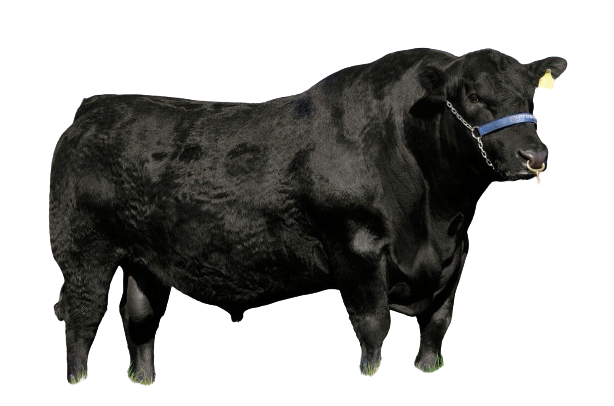
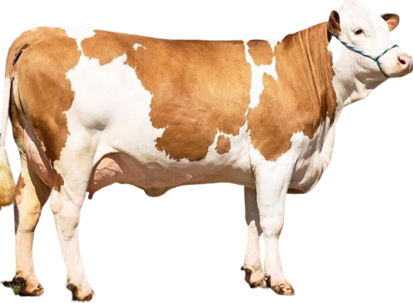
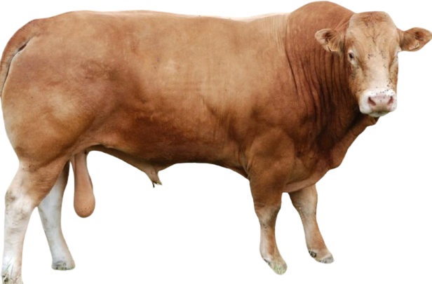
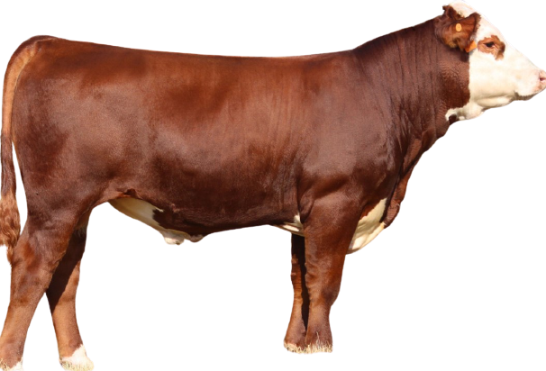
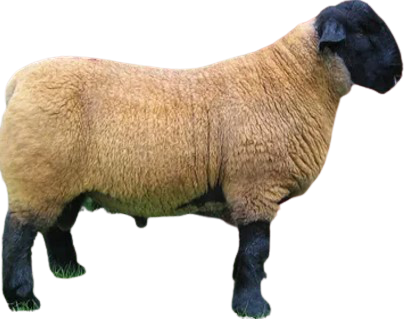
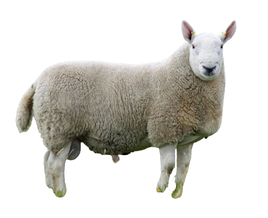
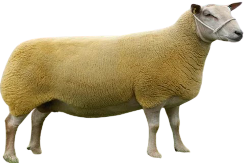
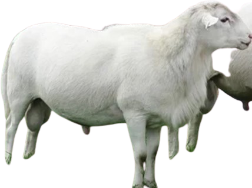
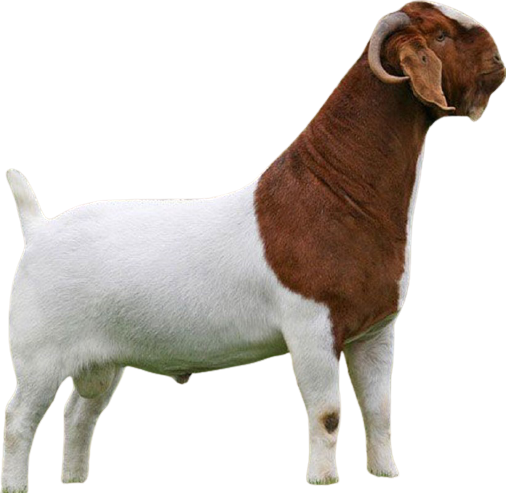
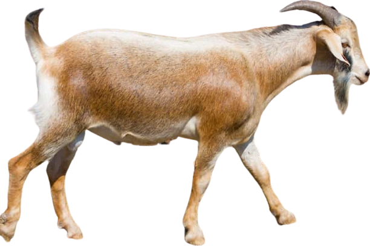

By scrolling down you will choose diffrent kid of livestock and you may register it as much as you want.
see and book our product
Cattle Section
Sheep Section
Goat Section
Camel Section
Angus
Angus can be either red or black and are naturally polled (polled means no horns).It belong from
Scotland. They are traditionally noted for their moderate size with an
average bull weighing 1045.5 kilograms and an average female weighs 568 kilograms.

Simmental
Simmental is large framed with lots of muscle and excellent maternal instincts. They range in colour
from light tan to dark red and have white markings. They can be polled or horned. It belong from
Switzerland. Mature Simmental bulls range from 1091 to 1273 kilograms,
while females average around 727 kilograms.

Limousin
Limousin have heavy muscling and have awesome lean high yielding body mass (also known as carcass in the
cattle world). Limousins traditionally are golden red to brown in colour or black. They are deeper in
colour around their neck, this is very noticeable
in the bulls. The bulls weigh around 1091 kilograms and the females weigh around 636 to 727 kilograms.

Hereford
Hereford imported from the British. They have a consistent colour
pattern of red with a white face, brisket (skin that hangs underneath the neck) and underside. There are
both polled and horned Herefords.
Bulls will weight 1000-1046 kilograms and females weight 591 to 682 kilograms.

Suffolk
Suffolks are a common breed of domestic sheep. They are polled, and have black open faces along with
black legs and white-woolled bodies. Their large frame and muscular bodies make them an ideal breed for
meat production.Male will weight 125 kilograms
and females weight 88 kilograms.

Cheviot
Cheviot is a breed of white-faced sheep which gets its name from a range of hills in north
Northumberland. The Cheviot is a dual-purpose breed, being raised primarily for its wool and
meat. Weight between 72-90 kg.

Charollais
Charollais is a breed of domestic sheep originating in east central
France. Weight from 90kg to 135kg. The head is pinkish-brown and is usually free of wool but
may have a fine covering of pale coloured
hair and both sexes are polled (without horns).

katahdin
Katahdin is a breed of domestic sheep developed by breeder Michael Piel in Maine,
United States. The average Katahdin ewe weight is 120 to 80kg and ram's
weight is 90kg-125kg.The Katahdin sheds its winter
coat, and so does not have to be sheared. The Katahdin's hair can come in any color, as the emphasis of
the breed is on production rather than appearance.

Boer
Boer goat from South African, they were selected for meat rather than
milk production. Have white bodies and distinctive brown heads. Some Boer goats can be completely brown
or white or paint. weigh
36 kg at 90 days.

Spanish
Spanish goat from Spain. Has a wide color variation, and they can be
found in any color that is found in goats. Body weight of the adult goat vary from 23 to 90 kg. They
have large ears and their ears
are held horizontally and forward next to the head. Used mainly for meat production

Dromedary
The dromedary located mostly in Saudi Arabia. Males typically weight
between 400 and 600 kg, females between 300 and 540 kg. The coat is generally brown but can range from
black to nearly white. Use
for meat mostly and milk production.